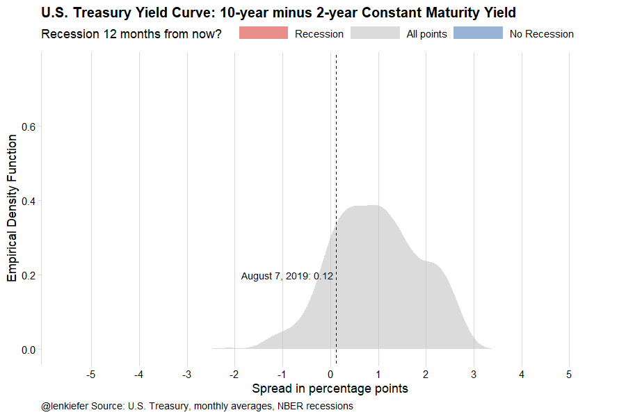
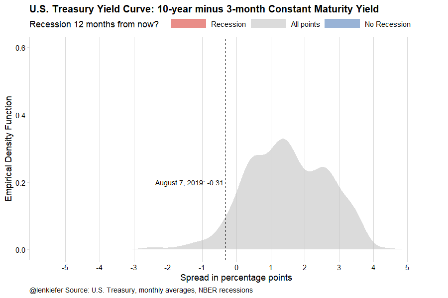

Earlier today I tweeted out some yield curve charts. I won’t go into great detail into the why, but here I will share some R code to make the charts.
My Thread:
hope you all are ready for some crazy yield curve charts, cuz you're about to get some crazy yield curve charts
— 📈 Len Kiefer 📊 (@lenkiefer) August 7, 2019
We can get Treasury yield curve data from the U.S. Treasury here but for plotting purposes it’s easier to grab the data from FRED.
First get data
#
library(tidyverse)
library(cowplot)
library(gifski)
library(gganimate)
library(tweenr)
# tickers
tickers <- c(#"T10Y3MM",
#"T10Y2YM",
"GS10",
"GS2",
"TB3MS",
"USREC")
df <- tidyquant::tq_get(tickers,get="economic.data",from="1953-01-01")Then do a bit of wrangling:
df2 <-
df %>%
spread(symbol,price) %>%
mutate(rec12=lead(USREC,12),
T10Y3MM=GS10-TB3MS,
T10Y2YM=GS10-GS2)
df_rec <- filter(df, symbol=="USREC") %>%
mutate(rec12=lead(price,12)) %>%
mutate(recind=ifelse(rec12==1,"Recession in 12 months","No Recession in 12 months"))
df3 <- df2 %>%
select(date,T10Y3MM,T10Y2YM) %>%
gather(symbol,price,-date) %>%
mutate(var=case_when(symbol=="T10Y3MM"~ "Spread 10-year minus 3-month Treasury",
symbol=="T10Y2YM"~ "Spread 10-year minus 2-year Treasury",
T ~ "Recession Indicator")) %>%
left_join(select(df_rec, date,recind), by="date") %>%
# hard coded based on Treasury data from August 7, 2019
# https://www.treasury.gov/resource-center/data-chart-center/interest-rates/Pages/TextView.aspx?data=yield
mutate(vlast = ifelse(symbol=="T10Y3MM",-0.31, 0.12))Make plots:
ggplot(data=filter(df3,!is.na(recind)), aes(x=price, fill=recind,color=recind))+
geom_density(alpha=0.5,color=NA)+
facet_wrap(recind~var)+
geom_rug(sides="b",alpha=0.25)+
scale_fill_manual(name="Recession 12 months from now? ",values=c("#4575b4","#d73027"))+
scale_color_manual(name="Recession 12 months from now? ",values=c("#4575b4","#d73027"))+
scale_x_continuous(breaks=seq(-10,10,1))+
theme_minimal_vgrid()+
geom_vline(aes(xintercept=vlast), linetype=2)+
geom_text(data=. %>% filter(date==max(date)),color="black",hjust=1,
aes(y=0.2,label=paste0("August 7, 2019: ", vlast," "), x=vlast))+
labs(x="Spread in percentage points",y="Empirical Density Function",
title="U.S. Treasury Yield Curve and Recessions",
caption="@lenkiefer Source: U.S. Treasury, monthly averages, NBER recessions")+
theme(legend.position="top",
plot.caption=element_text(hjust=0),
plot.title=element_text(face="bold"),
strip.text=element_text(face="bold"))## Warning: Removed 284 rows containing non-finite values (stat_density).
We can also plot the cumulative density. This tells us what fraction of the time the yield curve slope was less than or equal to a specific value 12-months ahead of a recession.
ggplot(data=filter(df3,!is.na(recind)), aes(x=price, fill=recind,color=recind))+
# cumulative density
stat_ecdf(alpha=0.3,geom="area",color=NA)+
stat_ecdf(alpha=1,geom="line")+
facet_wrap(recind~var)+
geom_rug(sides="b",alpha=0.25)+
scale_fill_manual(name="Recession 12 months from now? ",values=c("#4575b4","#d73027"))+
scale_color_manual(name="Recession 12 months from now? ",values=c("#4575b4","#d73027"))+
scale_x_continuous(breaks=seq(-10,10,1))+
theme_minimal_vgrid()+
geom_vline(aes(xintercept=vlast), linetype=2)+
geom_text(data=. %>% filter(date==max(date)),color="black",hjust=1,
aes(y=0.2,label=paste0("August 7, 2019: ", vlast," "), x=vlast))+
labs(x="Spread in percentage points",y="Cumulative Empirical Density: Pr(X<=Y)",
title="U.S. Treasury Yield Curve and Recessions",
caption="@lenkiefer Source: U.S. Treasury, monthly averages, NBER recessions")+
theme(legend.position="top",
plot.caption=element_text(hjust=0),
plot.title=element_text(face="bold"),
strip.text=element_text(face="bold"))## Warning: Removed 284 rows containing non-finite values (stat_ecdf).
## Warning: Removed 284 rows containing non-finite values (stat_ecdf).
Animate it!
We can animate these plots after modification using gifski and tweenr.


df7 <- df3 %>% filter(!is.na(price), !is.na(recind)) %>%
mutate(ind=ifelse(recind=="No Recession in 12 months",1,0))
myxy2<- function(rr=1, in.df=df7,vv="T10Y2YM"){
x<-filter(in.df, ind==ifelse(rr==1,-1,0),symbol=vv)$price
outdf<- data.frame(
x=density(x)$x[which.max(density(x)$y)], #find maximum density (in y dimension)
y=max(density(x)$y,na.rm=T)
)
}
myxy <- function(rr=1,in.df=df7,vv="T10Y2YM", N= 600){
if (rr== -1) {rr=c(0,1)}
x<-filter(in.df, ind %in% rr,symbol==vv)$price
outdf<- data.frame(
x=density(x,n=N)$x, #find maximum density (in y dimension)
y=density(x,n=N)$y,
ind=case_when(rr==1~-1,
rr==0~1),
rind=case_when(rr==1~"Recession in 12 months",
rr==0 ~"No Recession in 12 months",
T ~ "All months"))
}
df8a <- bind_rows(myxy(1),myxy(0)) %>% mutate(rind="All",ind=0)
df8b <- myxy(-1,N=1200) %>% mutate(rind="All",ind=0)
df8 <-
bind_rows(df8b) %>%
keep_state(30) %>%
tween_state( bind_rows(myxy(1),myxy(0)),'linear',20) %>%
keep_state(50)
myplot2<- function(i=1){
ggplot(data=filter(df8,.frame==i), aes(x=x,y=y,fill=ind,group=paste0(rind,":",ind)))+
geom_area(alpha=0.55,color=NA)+
scale_fill_gradient2(name="Recession 12 months from now? ",limits=c(-1,1),
breaks=c(-1,0,1),labels=c("No Recession", "All points", "Recession"),
low="#4575b4",mid="gray",high="#d73027")+
scale_color_gradient2(name="Recession 12 months from now? ",limits=c(-1,1),
breaks=c(-1,0,1),labels=c("No Recession", "All points", "Recession"),
low="#4575b4",mid="gray",high="#d73027")+
scale_x_continuous(breaks=seq(-5,5,1),limits=c(-5.5,5.5))+
scale_y_continuous(limits=c(0,0.76))+
theme_minimal_vgrid()+
labs(x="Spread in percentage points",y="Empirical Density Function",
title="U.S. Treasury Yield Curve: 10-year minus 2-year Constant Maturity Yield",
caption="@lenkiefer Source: U.S. Treasury, monthly averages, NBER recessions")+
theme(legend.position="top",
legend.key.width=unit(2,"cm"),
plot.caption=element_text(hjust=0),
plot.title=element_text(face="bold"),
strip.text=element_text(face="bold"))+
geom_vline(data=filter(df3,date==max(date),symbol=="T10Y2YM"), inherit.aes=FALSE,aes(xintercept=vlast), linetype=2)+
geom_text(data=df3 %>% filter(date==max(date), symbol=="T10Y2YM"),color="black",hjust=1,inherit.aes=FALSE,
aes(x=vlast,y=0.2,label=paste0("August 7, 2019: ", vlast," ")))
}
N2<- max(df8$.frame)
t1 <-Sys.time()
gif_file <- save_gif({for (i in seq((1):N2)){
g<- myplot2(i)+ guides(fill = guide_legend(reverse=T))
print(g)
print(paste(i,"out of",N2))
}
for (ii in 1:1){
print(g)
print(paste(ii,"out of",30))
}
# Set mydir to some place to store your ouptut file
}, gif_file= paste0(mydir,"/yc10y2y.gif"),width = 900, height = 600, res = 92, delay=1/20)
t2 <- Sys.time()
t2-t1
df9a <- bind_rows(myxy(1,vv="T10Y3MM"),myxy(0,vv="T10Y3MM")) %>% mutate(rind="All",ind=0)
df9b <- myxy(-1,N=1200,vv="T10Y3MM") %>% mutate(rind="All",ind=0)
df9 <-
bind_rows(df9b) %>%
keep_state(30) %>%
tween_state( bind_rows(myxy(1,vv="T10Y3MM"),myxy(0,vv="T10Y3MM")),'linear',20) %>%
keep_state(50)
myplot3<- function(i=1){
ggplot(data=filter(df9,.frame==i), aes(x=x,y=y,fill=ind,group=paste0(rind,":",ind)))+
geom_area(alpha=0.55,color=NA)+
scale_fill_gradient2(name="Recession 12 months from now? ",limits=c(-1,1),
breaks=c(-1,0,1),labels=c("No Recession", "All points", "Recession"),
low="#4575b4",mid="gray",high="#d73027")+
scale_color_gradient2(name="Recession 12 months from now? ",limits=c(-1,1),
breaks=c(-1,0,1),labels=c("No Recession", "All points", "Recession"),
low="#4575b4",mid="gray",high="#d73027")+
scale_x_continuous(breaks=seq(-5,5,1),limits=c(-5.5,5.5))+
scale_y_continuous(limits=c(0,0.6))+
theme_minimal_vgrid()+
labs(x="Spread in percentage points",y="Empirical Density Function",
title="U.S. Treasury Yield Curve: 10-year minus 3-month Constant Maturity Yield",
caption="@lenkiefer Source: U.S. Treasury, monthly averages, NBER recessions")+
theme(legend.position="top",
legend.key.width=unit(2,"cm"),
plot.caption=element_text(hjust=0),
plot.title=element_text(face="bold"),
strip.text=element_text(face="bold"))+
geom_vline(data=filter(df3,date==max(date),symbol=="T10Y3MM"), inherit.aes=FALSE,aes(xintercept=vlast), linetype=2)+
geom_text(data=df3 %>% filter(date==max(date), symbol=="T10Y3MM"),color="black",hjust=1,inherit.aes=FALSE,
aes(x=vlast,y=0.2,label=paste0("August 7, 2019: ", vlast," ")))
}
N3<- max(df9$.frame)
t1 <-Sys.time()
gif_file <- save_gif({for (i in seq((1):N3)){
g<- myplot3(i)+ guides(fill = guide_legend(reverse=T))
print(g)
print(paste(i,"out of",N3))
}
for (ii in 1:1){
print(g)
print(paste(ii,"out of",30))
}
}, gif_file= paste0(mydir,"/yc10y3m.gif"),width = 900, height = 600, res = 92, delay=1/20)
t2 <- Sys.time()
t2-t1